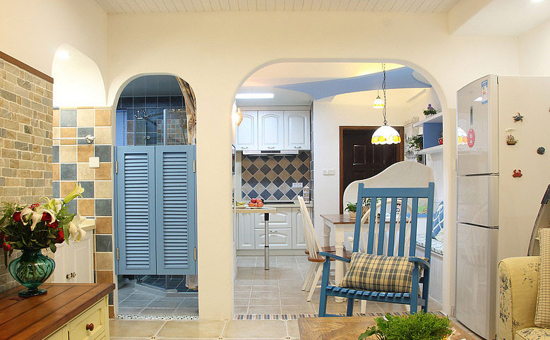
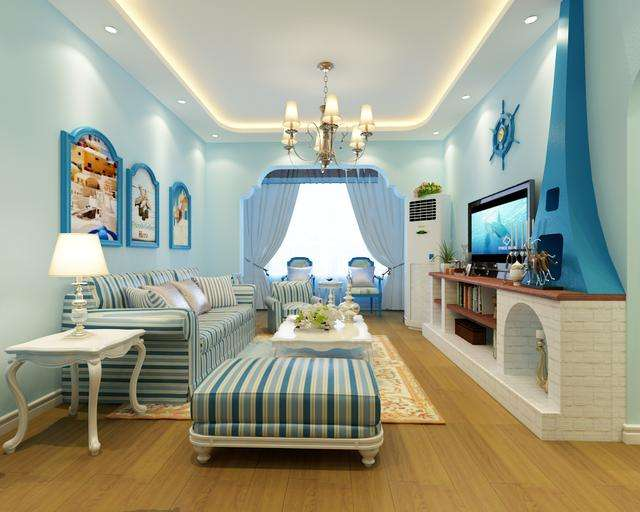

地中海装修风格其实是一种由于文艺复兴经济萧条后重新兴起形成的独特的风格。很多人都特别喜欢这种风格，因为这种风格的颜色都是海水蓝的，自由奔放、色彩多样明亮，这样仿佛置身于海水中生活一般。

地中海风格中比较有地域性的三种典型的颜色搭配就是西班牙蔚蓝色的海岸和白色沙滩;希腊的白色村庄与沙滩和碧海、蓝天融合成一体，还有就是北非特有的沙漠、岩石等等。
地中海风格的白墙涂抹的装修材料都是很随意的，是不经意的涂抹修整出来的结果，形成的是一种不规则的特殊的表面。那么很多设计师随意的想出来的图案都能够是整体呈现出来更精致的效果，这就是它独特的魅力所在。
很多的爬藤类的植物是地中海风格的主要的装饰物，在家居中是比较常见的，也有小巧可爱的绿色盆栽。在装修风格中颜色都是选择做旧的，这样就好像是自然的风吹日晒，装饰出来比较的自然。